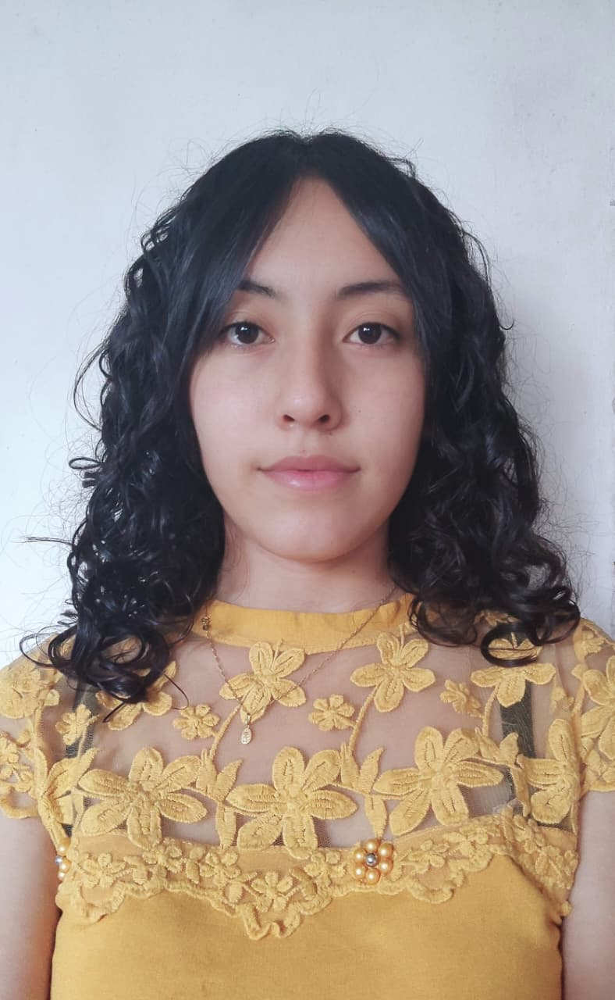

Animales
Fotografías centradas en animales, sus expresiones, movimiento y cercanía con lo vivo.
Naturaleza
Paisajes, plantas, texturas y espacios naturales observados desde una mirada pausada.
Cielo
Imágenes del cielo, las nubes, los colores y los cambios de luz.
Tabogo City
Fotografías de espacios urbanos, edificios, recorridos y detalles de ciudad.
Instantes Bonitos
Fotografías tomadas sin un objetivo definido, nacidas del impulso de capturar algo que simplemente se sintió bonito.
Autobiografía

Diana Ferraro construye su mirada fotográfica desde la observación de lo cotidiano, los paisajes y la naturaleza. Sus imágenes buscan detener momentos sencillos y revelar en ellos una forma distinta de mirar: más pausada, sensible y atenta a los detalles.
Su trabajo se acerca a los espacios naturales, la luz suave y las escenas silenciosas, entendiendo la fotografía como una manera de transformar lo común en una experiencia visual más íntima. En su historia personal, la cercanía con los animales también ha sido importante: durante siete años compartió su vida con dos pollos que marcaron una parte significativa de su cotidianidad y de su vínculo con lo vivo.